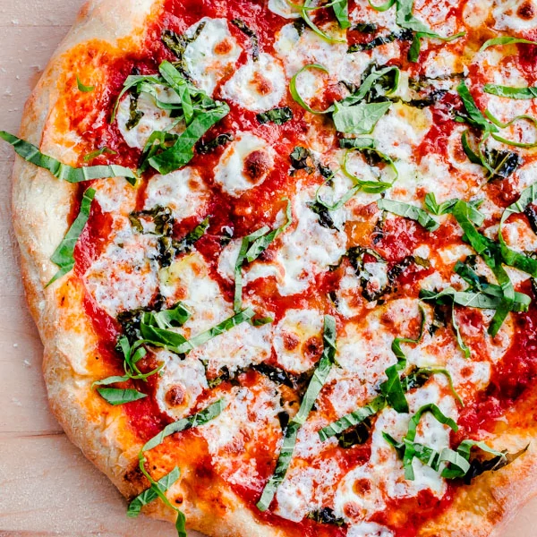

Pizza
Description
A baked dish originating in Italy, which consists of a flat, round, crispy leavened dough covered with a layer of sauce and a layer of one or more toppings, such as meat, seafood, vegetables, and fruit, which is often topped with a layer of cheese.